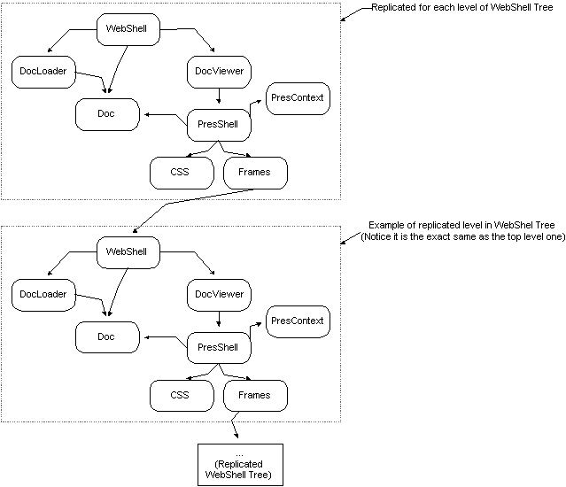

|
|
WebShell Design
Welcome to the WebShell Design page. This
page is being written pretty much after the fact. What I mean is
WebShell is on it's way out with a new and improved design of nsWebBrowser
and DocShell taking it's place. This page is being provided to show
a brief look at the state of the world prior to the redesign. Some
explanation on the sub-systems of the WebShell will be provided, but in
general they will simply get high level mention. You will note that
this document will talk mostly about what is wrong with WebShell.
This is to provide explanation of why it must be re-written. [If
you have expertise on the WebShell and wish to provide information about
it's design for historical reasons, please feel free to contact me about
updating portions of the doc, but readers, don't expect it to happen.]
Index:
1. WebShell Design
This is a basic diagram of the composition of WebShell:

2. WebShell Sub-Systems
What follows is a high level description of the major objects involved
with the WebShell as it exists today (10/10/99). The WebShell sub-systems
are divided into two categories: content and presentation.
A. Content
Content Model
Document content is represented a tree of content nodes. Each
content node implements nsIContent. In addition, each content node
may implement one of the stardard W3C DOM content interfaces. Content
nodes are entirely independent of a presentation.
Document
The Document is the top-level content object. It owns the content
model and all subdocument. It owns state common to all presentations
of the document, like the style sheet list and whether selection is displayed
or not [selection display should not be state on the document.]
DocumentViewer
The DocumentViewer is the root object for the presentation of documents.
It provides a small number of window-like features.
DocumentLoader
The DocumentLoader subsystem is responsible for filling a document
instance with content from a URI. It includes logic for mapping a
MIME type the right DocumentLoader.
B. Presentation
Frame Model
The presentation of the content model is represented by a tree of
layout objects called frames. There is a many:1 relationship between
frames and content nodes. Frames contain all of the presentation
data about a content node, including its size, position, relationship to
other frames, etc. The frame tree is a visual reflection of the underlying
content tree.
Style Model
The Style System resolves stylistic attributes for every node in the
content tree. It creates a tree of style contexts in a 1:many relationship
with nodes in the frame tree. This is the style model. Presentation
is largely driven by style. The Style System is responsible for mapping
each content node to 0 or more frames. Each frame has an associated
style context, which it may share with other frames.
PresShell
The PresShell is the root object for a single presentation of the document.
The PresShell owns the frame model for the presentation and all associated
presentation data. Reflow operations (the layout of the content by
the gecko layout system) are initiated by the PresShell.
PresContext
The PresContext holds data about the capabilities of the presentation
device and the values of various presentation variables. For example,
the PresContext determines whether the display is paginated or galley,
the resolution of the device, etc. Currently, the PresContext also
holds some variable state, but it is our intention to make this an entirely
stateless immutable object, so a single instance of the PresContext can
be shared throughout the presentation.
WebShell
The WebShell handles embedding browser capabilities in an application.
It also handles embedding subdocuments recursively within a document.
This feature is currently used for HTML frames and text input form elements.
The current WebShell interface is monolithic, handling a large number
of responsibilities for both browsing and embedding. It is our intention
to break this interface into several independent interfaces.
3. Problems with WebShell
-
The API is irrational. WebShell is a total mess right now.
It's been a dumping ground for anything having to do with high level browser
operation, external embedding of gecko, and internal embedding of subdocument.
That's too much for any one object to reasonably handle. Furthermore,
nsIWebShell has become monolithic and needs to be broken into several manageable
interfaces.
-
WebShell is huge. It requires loading lots of services and allocating lots
of memory for each instance. Since most of this state is only required
by the top level WebShell, if at all, re-allocating everything for embedded
subdocuments is a huge waste of memory and allocation time.
-
WebShell is slow in some important cases. In the common case of loading
a blank document, WebShell requires an expensive trip through the network
library for loading about:blank which is very slow compared to simply constructing
a minimal html document. Embedded documents should not be forced
to go through the network library.
-
WebShell creates it's own PresContext on initialization. WebShell creates
it's own PresContext, one per WebShell. In some cases, this
imposes the need to re-resolve style for the entire document on load since
there is currently no way to pass in custom style data. Since PresContext
will soon be an immutable object, per-WebShell allocation is a big waste
of time and space.
-
WebShell consumes too many system resources. The current WebShell
implementation always creates at least one and often several native windows
per WebShell. This has huge performance and system resource overhead.
-
Webshell does not work for applications wishing to embed it. There
are too many un-related callback methods on container interfaces and functionality
missing from interfaces embedding apps wish to call.
4. WebShell Solutions
See nsWebBrowser Design
for what's being done about this recommondation.
-
WebShell needs to be split into 2 objects, a topmost webshell used for
embedding gecko, and a lightweight DocShell used for embedding subdocs
recursively in the webshell.
-
The DocShell must have an API for the caller to supply a document, rather
than going through the network library to load a URL
-
The DocShell must have an API for the caller to supply a PresContext, rather
than creating one itself.
-
WebShells must not assume a need for a native window, and instead allow
the caller to have control over whether a native window is needed or not.
A native window would be useful for when the subdocument needs to be sandboxed:
logically isolated within the presentation of the document. Otherwise,
it is unnecessary overhead.
|